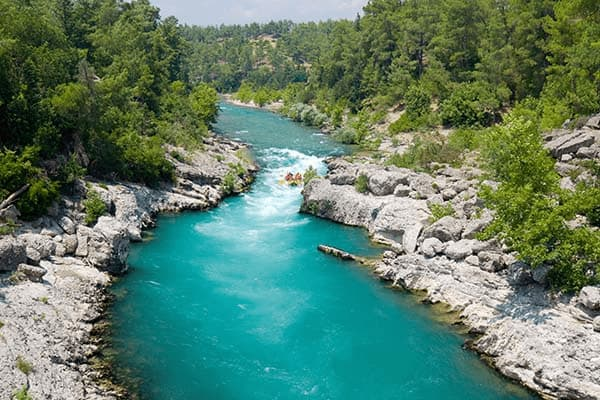

History
Founded in California in 1955, our rafting company was built on passion for
adventure and respecto for nature.
We have always aimed to create meaningful outdoor experience. For over 30 years, we
have operated with care for California's
river, following sustainable practices and promoting environmental responsibility.

Our rafting journeys are more than just an adventure on th water. Guests can also
enjoy hiking trails, sceniv viewpoints, and wildlife
observation along the river. Since 1995, we have proudly combined safety,
sutainability, and unforgettable outdoor experiences for
adventurers of all skill levels.